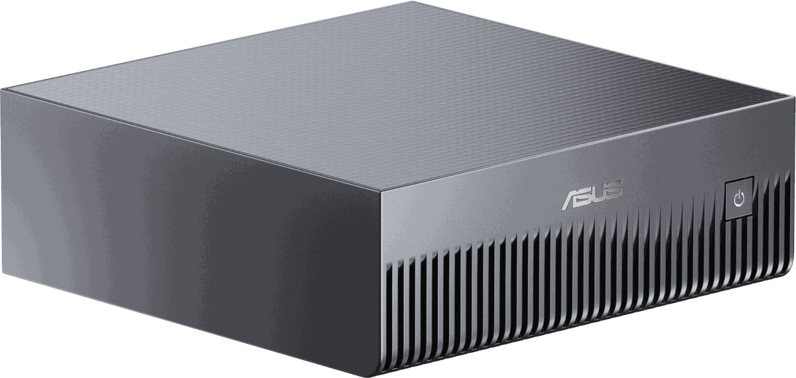

The file
A demand letter, a deposition excerpt, a client’s medical record.
Private · On-Premises · Yours
We buy the hardware, build it, configure it around the way you already work, and hand you the keys. One server in your office — no subscription, no per-seat fees, and no vendor holding your client files.
A fifteen-minute call is enough to tell you whether this fits your firm.
Running on your network

Where this starts
That decision has already been made — by your associates, your paralegals and your assistants. The open question is whose computer your client files sit on when it happens.
78%
of employees say they use unapproved AI tools.
WalkMe / SAP, AI in the Workplace Survey, 2025
79%
of legal professionals report using AI tools — while 44% of firms have no AI policy at all.
Clio Legal Trends, cited by the NC Bar Association, 2026
11%
of everything employees paste into AI tools is sensitive material.
Cyberhaven, 2026
Every one of those sessions runs on a server you do not own, under terms you never negotiated.
The invisible path
A demand letter, a deposition excerpt, a client’s medical record.
Free tier, personal email, no admin console, no record on your side.
Held under consumer terms your firm never reviewed or signed.
Retention you do not set, training you cannot audit, breach and discovery exposure you inherit.
No log. No copy. No answer for the client who asks where their information went.
How it works
Your team signs in from any browser on the office network. The model, the documents and every chat stay on hardware in your building.
Your office network
Your AI server
Everything above happens on hardware in your building.
The public internet
Not required. We can block it outright, or open only what you approve — a web-search tool, or a cloud model reachable from anywhere.
If your internet connection drops, the AI keeps working
What your team sees
A chat window with a message box. Nobody has to learn a new way of working.
A chat window with a message box — the same shape as the tools your team already opens.
Each person has an account. What they can reach is set by their role in the firm.
The firm’s best prompts written once, then available to everyone as a single click.
Load documents into the server and ask questions about them directly.
Any browser on the network that you have granted access — desktop, laptop or phone, in the office.
The server answers at the speed of your own network, with no queue, quota or usage cap.
The part that matters
The value is in the setup — and this is the work we do with you, on site.
Partners, associates, paralegals, employees — each group sees only the models and collections it should.
Only the models you have vetted appear in the menu. No silent switch to something new.
Chat retention set to your policy, deletion locked where you need a record, complete admin visibility.
Open registration when you hire, and revoke an account the day someone leaves the firm.
You get a written record of every setting we apply — in case you want to change it later.
The engagement
We order the AI server hardware and configure it with the model and software your firm will run.
On-site installation, accounts and access created, with a written record of every setting we changed.
A one-hour hands-on session for your admin covering the software and the start-up and shutdown procedures. All applicable documentation is supplied.
One firm, one box, one point of contact — us.
Straight answers
For the work a firm does most — summarising, drafting and searching your own documents — it is close enough that most people cannot tell the difference. For the hardest cognitive reasoning, the frontier cloud models still have a slight edge.
The AI hardware we use comes with a one-year warranty from the factory, and we add one free year of technical support that runs alongside it — so for that first year, you're covered by both at the same time.
From ordering the AI computers to a fully deployed server is about three to four weeks, mostly dependent on hardware availability.
After the server is built, configured and deployed, the only people with access are the ones you choose.
One person or thirty, the server costs the same — there is no per-seat license. We size the hardware to your headcount during the first call so the response times stay comfortable at your busiest hour.
No. We hand the server over configured and running, and train one admin at your firm on the day-to-day tasks: adding a user, removing a user, and the start-up and shutdown procedures. Everything else is documented.
Talk to us
Call and we will walk through your firm’s size, the work you would put through it, and what the hardware would cost you. No obligation, and no pressure to buy anything on the call.
720-937-6463